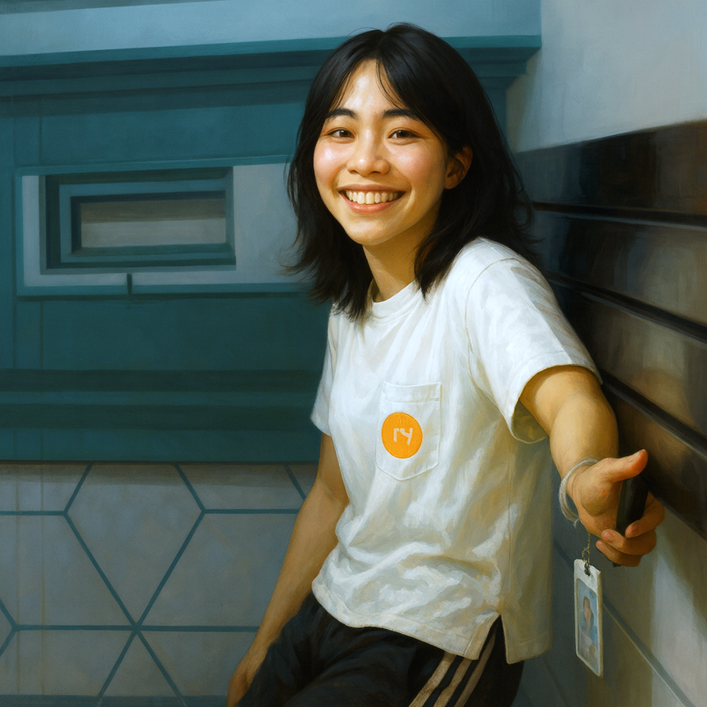

Illustration

Gender
♀️ - 女生
Goal
發表三篇電子紙論文
Ability
# 線性 L*a*b* 內插 -
論文傳遞階段，可以使用兩張不同顏色的卡牌，線性內插出第三種顏色的論文進行傳遞。
# 藉口放鳥 -
論文傳遞到面前時，宣告一種顏色，若與牌庫翻出的卡牌顏色相同，則可以不發表並進入棄牌堆。
## 想念你味道 -
你發表一位研究生的論文時，可以獲得他手牌中所有與論文同色卡牌，不足三張則牌庫補充。
Trivia
「線性 L*a*b* 內插」記得當年某位學長在報告中，講到色彩空間處理時略顯含糊，話還沒講完，Prof. 蛋頭博士便火速開啟爆噴模式，語氣強烈、震耳欲聾：
「L*a*b* 色彩空間不是線性的，不可以直接做線性計算！」
「你有沒有唸過色彩學？請你先唸懂了再來做研究好不好」
此話一出，從此所有學生對都色彩學懷著一種如履薄冰的敬畏。
然而時光荏苒，數年後的某次 Meeting，輪到珊珊姊報告。
她信心滿滿地說道：
「我在 L*a*b* 色彩空間進行內插，因為 L*a*b* 是線性的！」
眾人瞬間大驚，心跳加速，準備見證另一場經典爆噴。沒想到蛋頭博士卻只是悠哉地敲著鍵盤、滑著滑鼠，嘴裡還含著早餐，含糊地回了一句：
「非常好！做得不錯」
空氣靜止，全場發愣。
有人嘴巴張開到可以塞進三明治，有人眼神空洞地開始懷疑人生。
明明當年那句怒吼還歷歷在耳，怎麼今天卻變成了「非常好」？
大家彷彿走錯了世界線，懷疑自己是不是活在另一次元的 Lab。
有人筆記默默寫下：「L*a*b* 色彩空間是否線性，請視報告人而定」
「藉口放鳥」這個傳奇行為，源自於珊珊姊幾個膾炙人口的小故事
第一件發生在某個深夜。當大家討論消夜吃什麼時，珊珊姊非常積極地說要吃麥當勞，結果當一行人風塵僕僕走到麥當勞時，她卻突然改口：
「我沒有要吃啊，我是來幫你們刷優惠券的」
眾人面面相覷，心想 — 哇，妳人真的很好耶，但我們大家自己都有優惠券喔
完全不需要妳特地來幫忙刷，真是謝謝妳耶！
另一件發生在白天。
早上十點，珊珊姊、陳大帥帥和心碎小狗一起去找教授，結束時剛好中午十二點，於是帥帥隨口問了一句：「要不要一起去吃午餐？」
她想都沒想就點頭答應，結果沒過多久，她突然淡淡地說：
「我先不吃好了，剛剛吃過了」
剛剛我們不是全程在一起？你什麼時候偷吃的？
隨後在學弟苦苦追問之下，珊珊姊終於說出真相 —
她吃了一杯優格。
眾人：喔……
或許珊珊姊真的有雙重人格，起初出場的是「社交人格」，秒答應、秒加入；但一段時間後，突然切換成「孤僻人格」
默默開啟退場模式，卻又拉不下臉直說不想參與。只好硬擠出幾個邏輯死亡、漏洞百出的藉口，試圖放鳥大家。
但其實，真的不用這麼辛苦啦 —
直接說出來大家都會體諒的。
只怕妳講得太努力，大家還要裝作相信，才更累。
「想念你味道」這是一段無法實現，也從未說出口的感情
故事發生在湖口砲兵連連長即將畢業的最後一學期。因為實在抽不到宿舍，連長在指導教授的授意下，改採湖口 — 台北通勤制，用每週幾天的國道人生走完最後一里路。
或許是過去習以為常的日常突然中斷，珊珊姊的心中，開始出現了那種名為「空位即想念」的情緒。
連長的位子時而空著，讓人無法忽視那一片留白的存在。
而當疲憊襲來、又無處依靠時，她竟然自然而然地靠近了那張椅子…
枕著連長遺留的大棒棒抱枕與外套，沉沉入睡～
「伊人不在，唯有味道留存」
那一刻，仿佛氣味就是最後的牽引。而珊珊姊，睡得香甜如夢。
據現場目擊證人心碎小狗事後陳述：
「絕對有流口水在上面……」
更戲劇性的是 — 這段甜睡畫面還被拍下，流傳至群組。
結果不巧，竟被連長正宮親眼看到…現場差點兵變，修羅場一觸即發。
只可惜，珊珊姊的美夢最終沒有成真。
這場味道與情感交織的小插曲，也只能留在那段不說破的青春裡。
#SoC #Master #Year112
Relationship